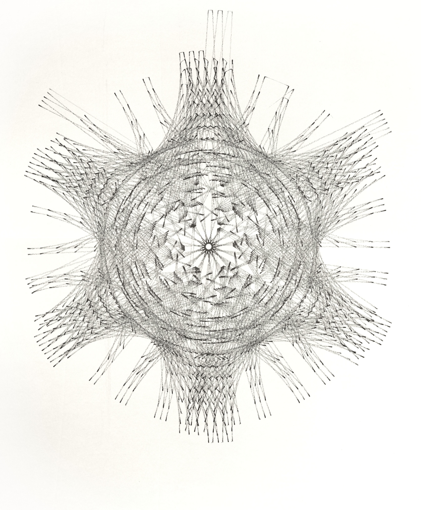
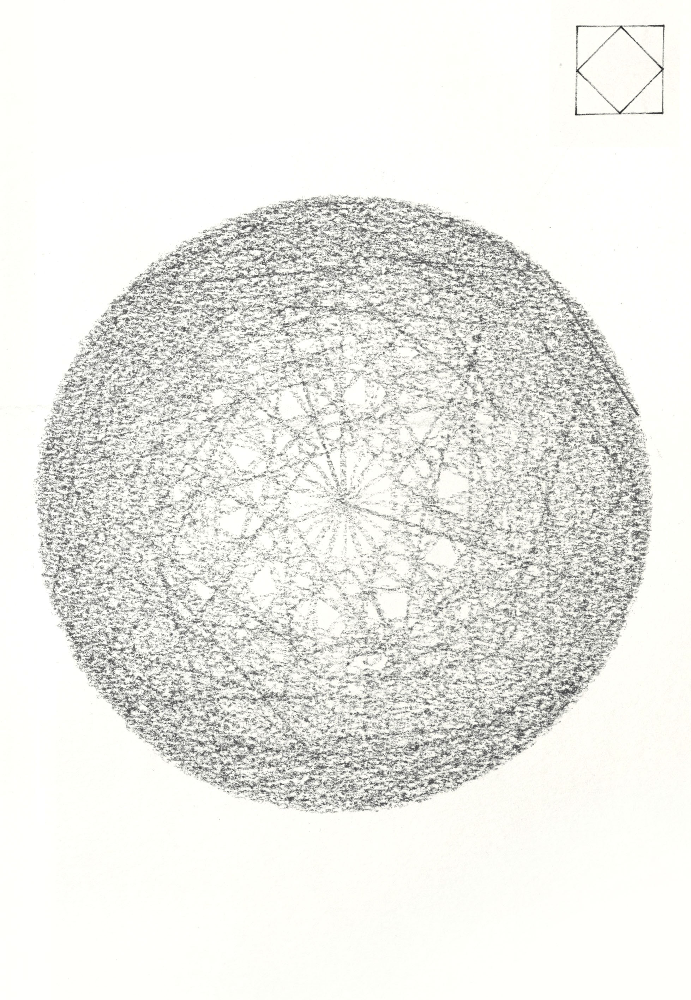
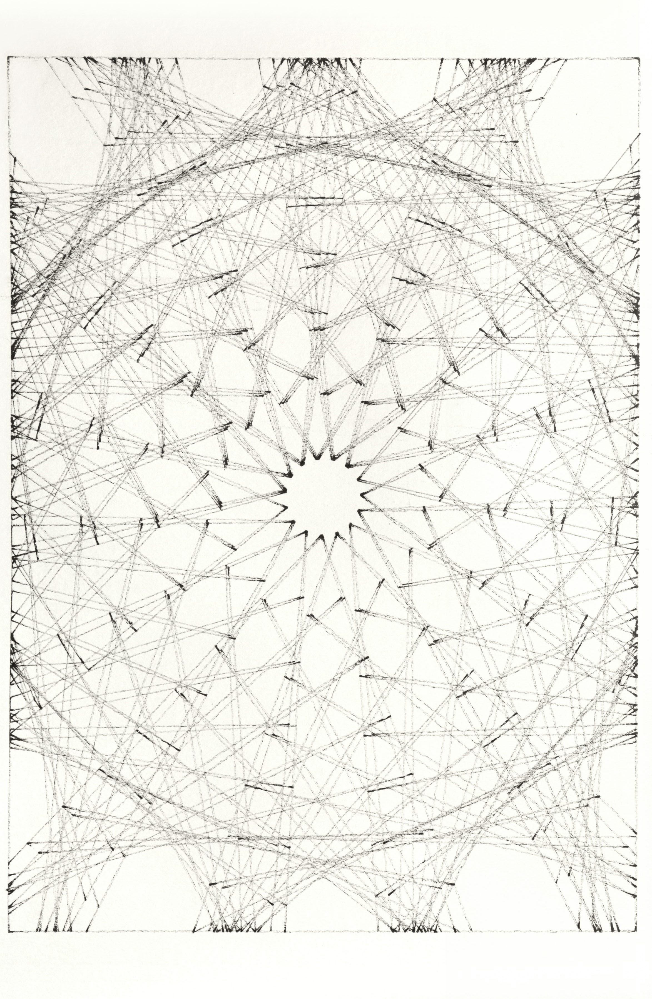

Serial Drift
I generated designs in Rhino and Grasshopper which were drawn by a pen plotter. I explored distorting the translation between the digital drawing and physical drawing by using dried out felt pens and charcoal.
4.021 - Design Techniques & Technologies
Spring 2020


